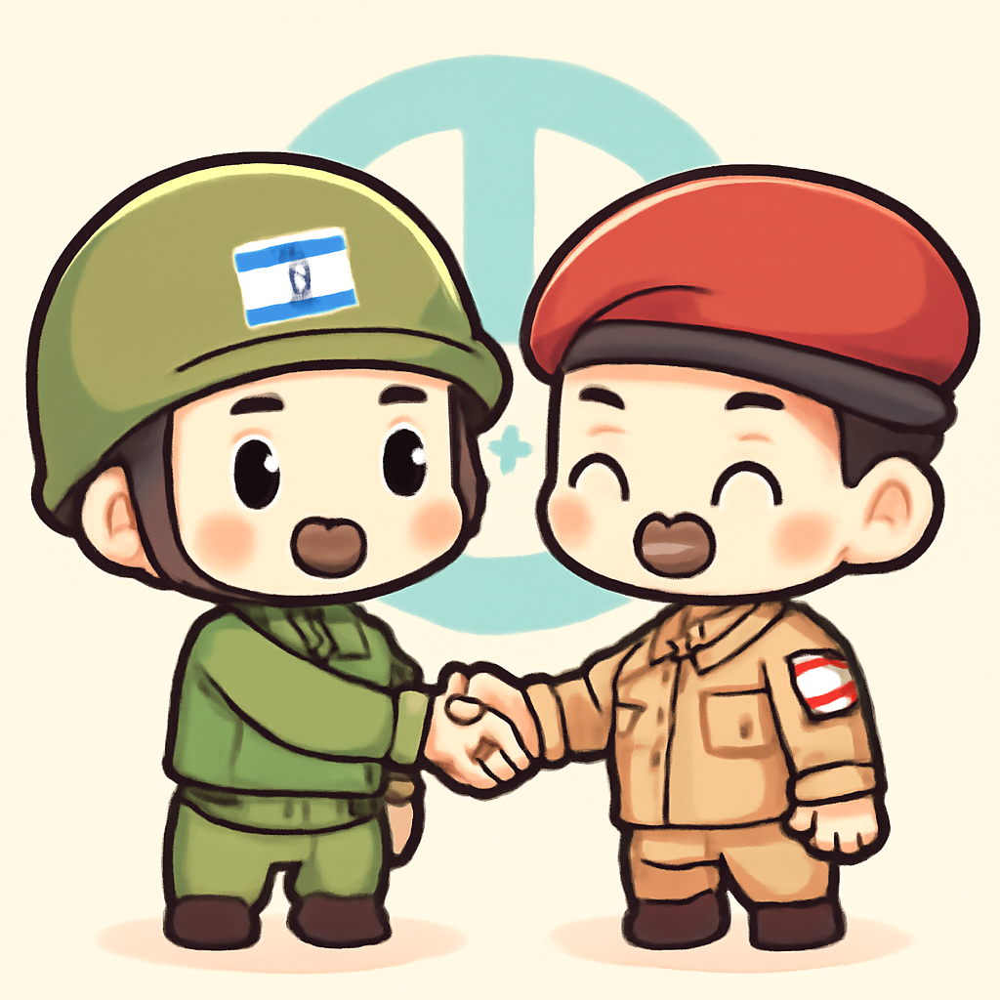
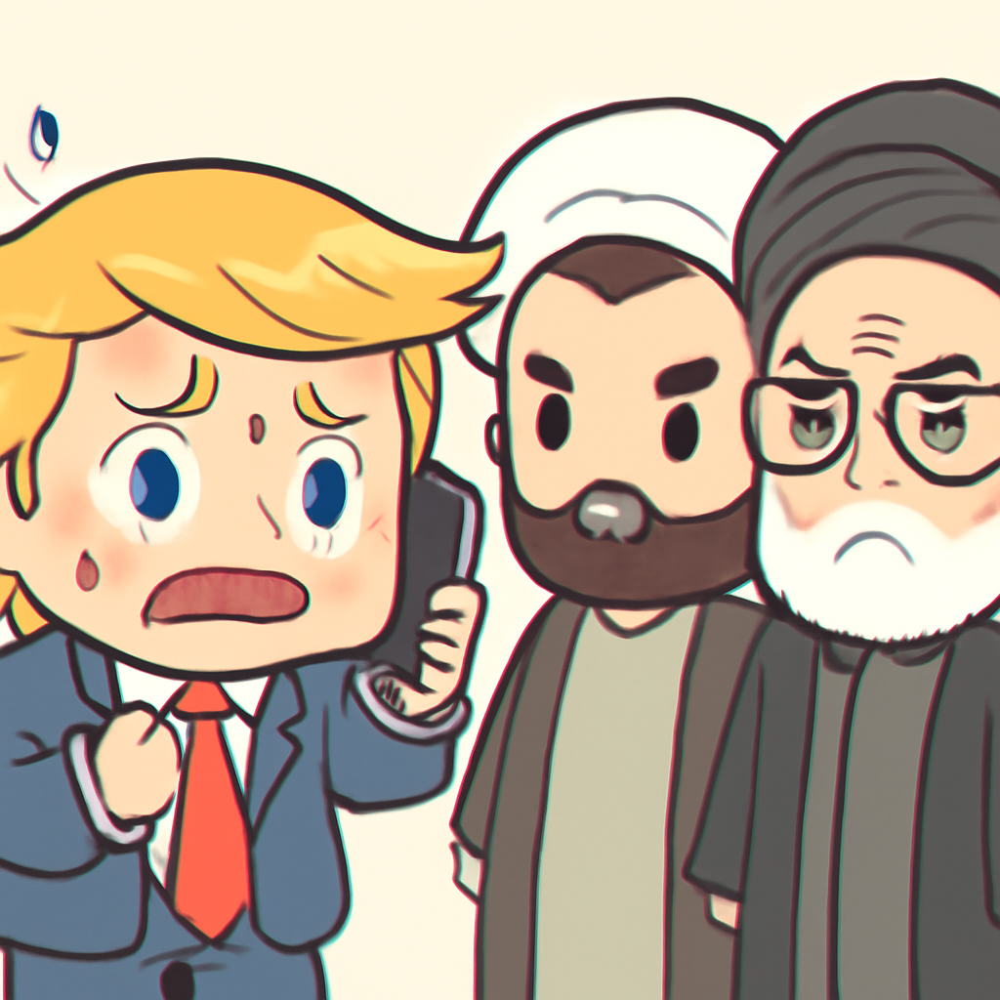
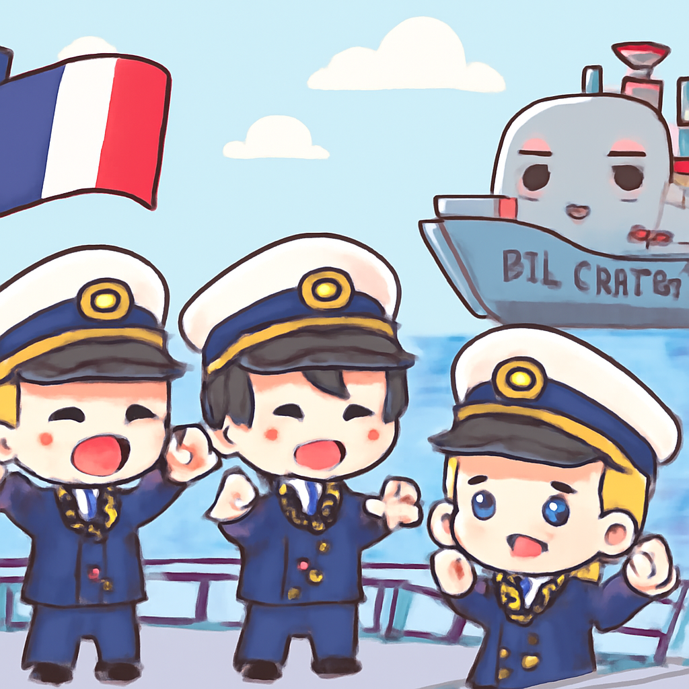
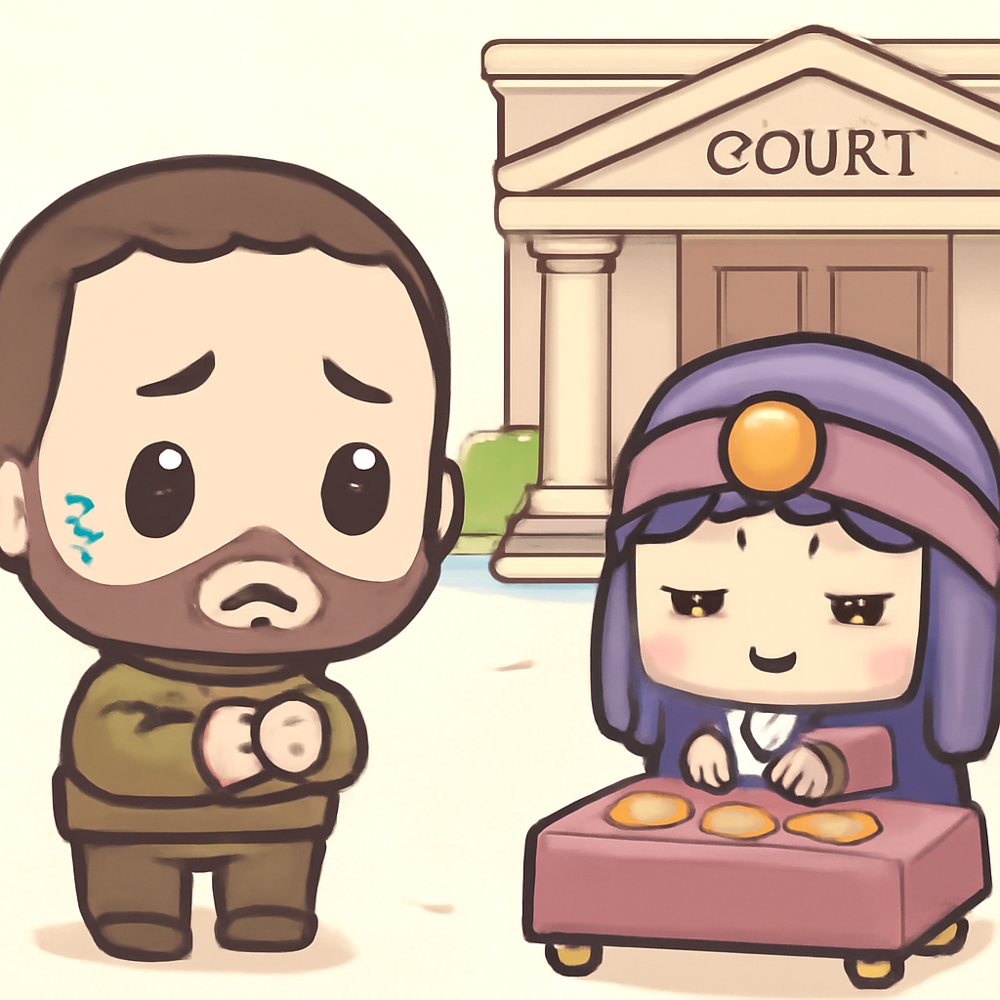
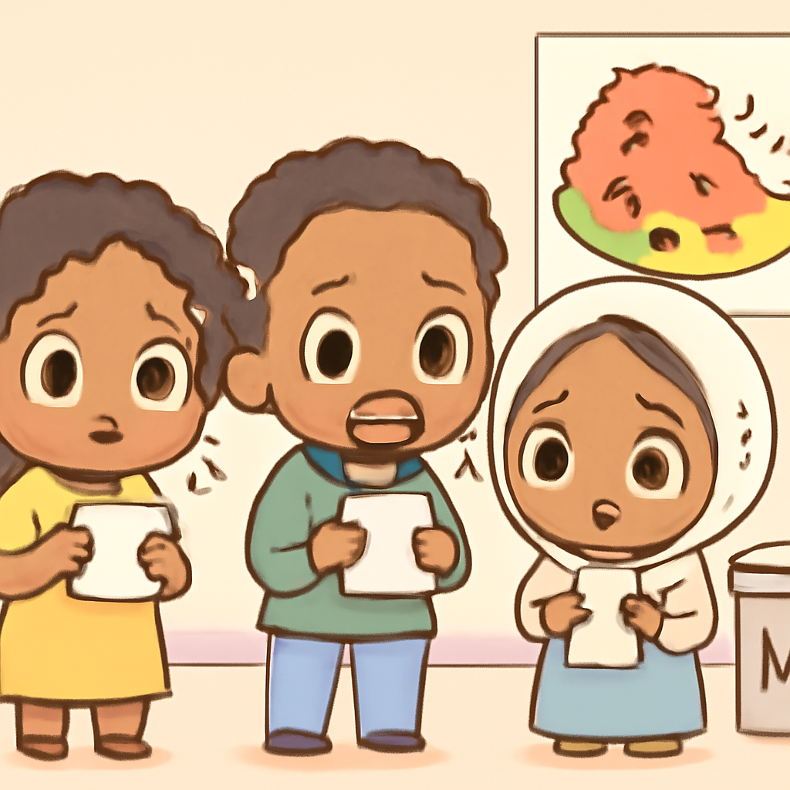

其一 · 黎巴嫩 · 聯合停止對以色列攻擊
黎巴嫩和以色列達成暫時停火協議。

在黎巴嫩，總理內塔尼亞胡警告如果真主黨不遵守美國提案，將進行對貝魯特的空襲。這次的停火協議雖然名為「暫時」，但卻是當前中東局勢的一個關鍵轉折，亦可能影響整個地區的穩定。希望這場棋局不會演變成一場國際象棋比賽，大家都不想被困在棋盤上。
🔗 原始新聞 ↗
2026-06-02 · 以古觀今，以笑抗愁
黎巴嫩和以色列達成暫時停火協議。

在黎巴嫩，總理內塔尼亞胡警告如果真主黨不遵守美國提案，將進行對貝魯特的空襲。這次的停火協議雖然名為「暫時」，但卻是當前中東局勢的一個關鍵轉折，亦可能影響整個地區的穩定。希望這場棋局不會演變成一場國際象棋比賽，大家都不想被困在棋盤上。
🔗 原始新聞 ↗
特朗普面臨壓力，急需與伊朗達成協議。

在美國，特朗普面臨著來自選民和海灣盟友的壓力，迫切希望結束與伊朗的戰爭。不過，伊朗方面似乎不打算輕易妥協，雙方的談判如同一場拔河賽，誰都不想放手。此時此刻，特朗普真的需要一個“和平的按鈕”，不過這次按鈕可不能是紅色的。
🔗 原始新聞 ↗
法國和英國共同執行對俄油輪的扣押行動。

在法國，總統馬克宏宣布法國海軍在英國的協助下，成功扣押了一艘受到制裁的俄羅斯油輪。這次行動不僅展現了兩國的合作意識，也反映了對俄羅斯行為的不滿。或許，這艘油輪未來將成為海上博物館的一部分，展示制裁的「藝術」。
🔗 原始新聞 ↗
澤倫斯基的右手被控貪污，面臨法律挑戰。

在烏克蘭，前總統澤倫斯基的右手安德里·耶爾馬克被控涉嫌挪用資金，並且據說還曾向算命師諮詢政治決策。這讓人不禁想，政治裡何必算命？或許直接問路邊攤的阿姨更準。此案不僅影響耶爾馬克的未來，也可能動搖澤倫斯基政府的根基。
🔗 原始新聞 ↗
埃塞俄比亞的選舉即將舉行，局勢堪憂。

在埃塞俄比亞，選舉即將來臨，但國內對於提格雷地區重新衝突的擔憂與日俱增。此次選舉不僅關乎權力，更可能成為國家未來的轉折點。希望選民們能用選票而不是武器來決定未來，否則就真成了「選舉戰爭」的主題曲了。
🔗 原始新聞 ↗